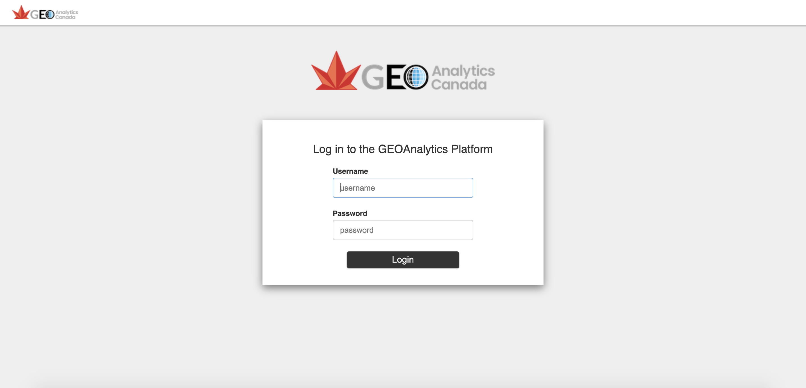
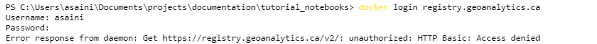

Authentication#
1. Levels of Authentication#
All software systems implemented in the GEO Analytics Demonstration Platform require users to be authenticated before access is given. The GEOAnalytics platform uses LDAP (Lightweight Directory Access Protocol) to store user information and allow users to authenticate and log into the platform. Hatfield has also implemented a single sign-on (SSO) system based on the industry-standard OAuth 2 protocol, where you, the user, only needs to login to the platform once to gain access of all platform functions. Using this SSO system, an API token is given when you first login and is validated by platform services when accessed by you.
All users need to login through the single-sign-on system with their username and password to access platform systems and data. 
Once you have logged in, you will be led to the GEOAnalytics Platform’s main dashboard.

From the image above, take note of the “API Access Token” in the top right corner and the bottom of the dashboard. This API token is another authentication method to access parts of the GEOAnalytics API. The token is primarily used by pasting the token into certain scripts for access to the platform’s tools.
2. Systems Accessible with Username and Password#
With your user and password stored in the browser for the single sign-on system, you have access to most of the system, instantly.
EO Browser is a web portal with collections of Earth Observation data which can be usable for all GEOAnalytic users.
Ground Truth system implements powerful APIs that allow ground truth data to be integrated into other platform services, such as the EO data pre-processing and Jupyter-Lab analytic environments.
JupyterLab allows interactive data analytics to be executed without worrying about computational resources or installing software.
Desktop App is a personal Ubuntu Desktop environment available in a web browser.
Kubeflow is a platform for large scale batch processing and machine learning tasks.
Gitlab is your private Git repository for managing and controlling scripts, programs, and docker images of your GEOAnalytics projects. It contains a container registry for Docker images.
FileBrowser contains the catelogue of data on the platform, ready to use/download.
However, Kubeflow and Gitlab require you to enter in your username and password for access.
For Example: to access Kubeflow through your JupyterLab environment, importing GeoAnalyticsKubflowClient and providing the username and password will give direct access. (This library to access Kubeflow will soon be available!)
from GEOAnalyticsKubeflowClient import GEOAnalyticsKubeflowClient
provider = DexProvider("http://kubeflow.geoanalytics.ca")
kubeflow_client = GEOAnalyticsKubeflowClient(input("Username: "), getpass.getpass(), provider)
3. Systems Accessible with API Token#
The API Token grants access to GEOAnalytics API which cannot be accessed with just your username and password.
An example of how to use this API token is down below. Here, Python sends a request to GEOAnalytics’ STAC Server, using the API token to directly access the STAC Browser and output the Server’s request header.
[58]:
import requests
import json
import sys
[ ]:
API_TOKEN = input("Please copy and paste your API Access Token here: ").strip()
[55]:
STAC_BASE_URL = "https://stac.geoanalytics.ca"
requests_headers = {'cookie': API_TOKEN}
[56]:
def test_STAC_server_request():
test_STAC_request = requests.get("https://stac.geoanalytics.ca", headers=requests_headers)
try:
res = test_STAC_request.json()
return res
except ValueError as ex:
print("STAC server did not return json. This is likely an issue with your access token. Please re-run cells from beginning and re-enter your token.")
API_TOKEN = None
[57]:
test_STAC_server_request()
[57]:
{'description': 'Arturo raster datastore',
'title': 'Arturo STAC API',
'links': [{'href': 'http://stac.geoanalytics.ca/',
'rel': 'self',
'type': 'application/json'},
{'href': 'http://stac.geoanalytics.ca/docs',
'rel': 'docs',
'type': 'text/html',
'title': 'OpenAPI docs'},
{'href': 'http://stac.geoanalytics.ca/conformance',
'rel': 'conformance',
'type': 'application/json',
'title': 'STAC/WFS3 conformance classes implemented by this server'},
{'href': 'http://stac.geoanalytics.ca/search',
'rel': 'search',
'type': 'application/geo+json',
'title': 'STAC search'},
{'href': 'http://stac.geoanalytics.ca/collections/landsat-8-l1_EXAMPLE',
'rel': 'child',
'type': 'application/json',
'title': 'Landsat 8 L1'}]}
If the above cell returns a dictionary with the STAC server’s header requests, then congratulations! You are authenticated! Otherwise, make sure you are assigning the correct authentication token to the API_TOKEN variable.
4. Logging in to Docker Registry#
Docker is an open platform tool designed for developing, deploying, and running applications using containers. Containers are used to combine the libraries, dependencies, and other parts of an application and deliver it as one package. Docker allows for efficient management of your infrastructure. GEOAnalytics Gitlab repositories each have a container registry associated with it.
Docker must be installed on your computer to access the container registry.
Visit https://docs.docker.com/ and install the application based on your Operating System.
4.2 Default Login Method#
Currently, accessing your Docker registry is not possible through GEOAnalytics’ Jupyter environment. To access and manage your docker images, login to the registry through your desktop’s Command Prompt (Terminal) with the following steps:
Type this command into terminal:
docker login registry.geoanalytics.caThis will prompt you to enter your Username, followed by your password. (Password is not visible for security purposes)
If you get a “Success!” message, then you have gained access!
However, if you receive the error: “Error response from daemon: Get https://registry.geoanalytics.ca/v2/: unauthorized: HTTP Basic: Access denied,” then we have a few more steps to get you connected!

4.3 Alternate Login Method#
Some accounts run into errors while attempting to connect to their docker registry, you have the same error as shown above, these are the steps to get access:
First we must create a personal access token (PAT) on gitlab. Navigate to https://git.geoanalytics.ca
Select “Settings” from the drop down menu in the top right corner.

In the left sidebar, click on “Access Tokens”.

Now, assign a name and an expiry date (can be set to any date in the future when you want the token to expire), and check on “api”.

Once created, this personal access token is only available once, when it is created. NOTE: Store this PAT in a secure location because you will not be able to access the same code again!

Next, with this personal access token created, run the following command in terminal, inputting in your username and the PAT in place.
docker login -u <username> -p <personal access token> registry.geoanalytics.ca
Now you should get a “Login Succeeded” message!